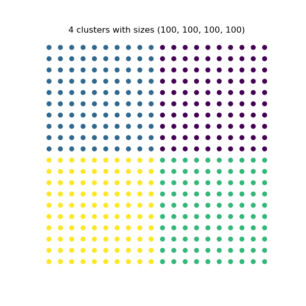
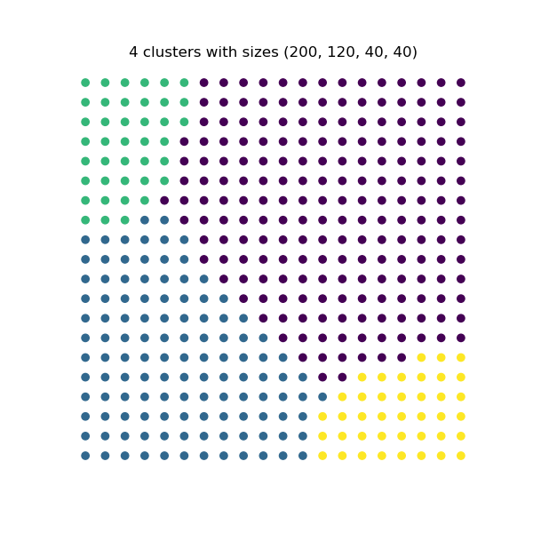
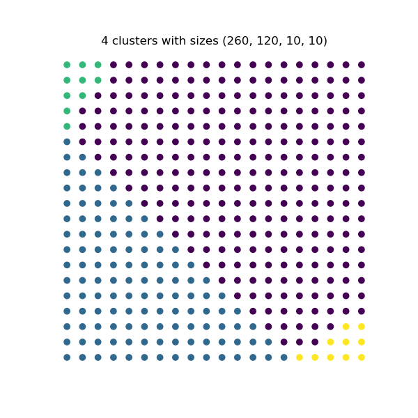
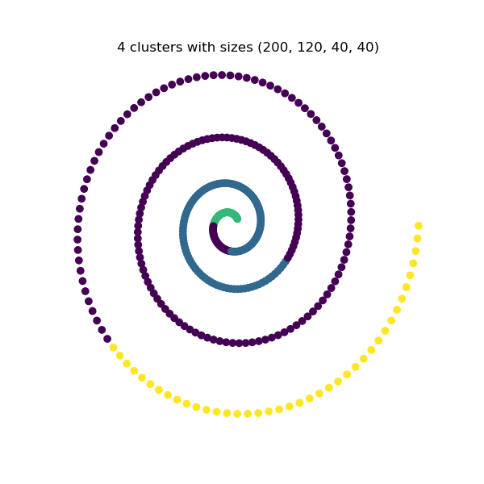
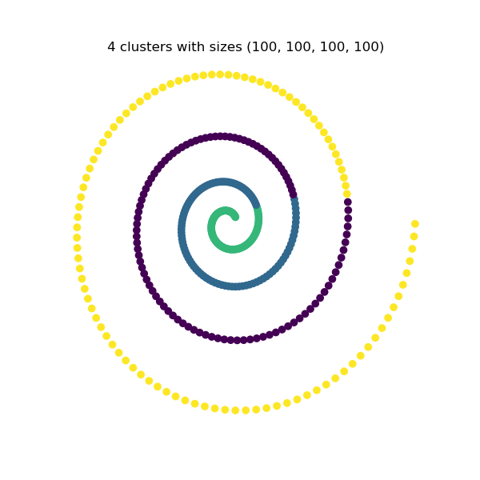
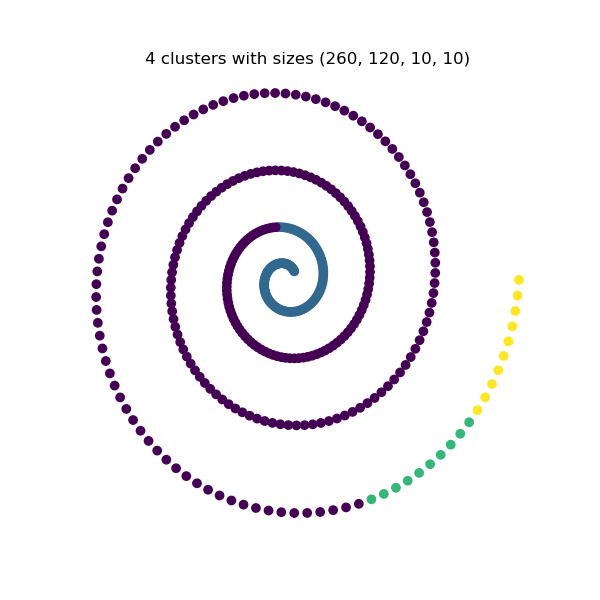

Clustering Euclidean Data
In the following code, we give an example for constrained spectral clustering on a toy grid dataset using different size constraints.
import matplotlib.pyplot as plt
import numpy as np
from ccluster.size import constrained_k_means
# generate a uniform grid
nx = np.arange(0, 100, 5)
ny = np.arange(0, 100, 5)
x_coords, y_coords = np.meshgrid(nx, ny)
data = np.column_stack([x_coords.reshape(-1), y_coords.reshape(-1)])
n_clusters = 4
constraints = [
[100, 100, 100, 100],
[200, 120, 40, 40],
[260, 120, 10, 10]
]
for cluster_size in constraints:
_, labels, _ = constrained_k_means(data,
n_clusters=n_clusters,
cluster_sizes=cluster_size)
# plotting
plt.figure(figsize=(6, 6))
plt.scatter(data[:, 0], data[:, 1], c=labels)
plt.xlabel('X')
plt.ylabel('Y')
plt.axis('off')
plt.title(f'{n_clusters} clusters with sizes {*cluster_size,}')
plt.show()



Clustering Graph Data
The following example shows a code snippet for constrained spectral clustering on a toy spiral dataset for different cluster size constraints.
import matplotlib.pyplot as plt
import numpy as np
from ccluster.size import ConstrainedSpectralClustering
# generate a spiral
x_coords = []
y_coords = []
for theta in np.linspace(7, 10 * np.pi, 400):
r = theta ** 2
x_coords.append(r * np.cos(theta))
y_coords.append(r * np.sin(theta))
data = np.column_stack([x_coords, y_coords])
n_clusters = 4
constraints = [
[100, 100, 100, 100],
[200, 120, 40, 40],
[260, 120, 10, 10]
]
for cluster_size in constraints:
labels = ConstrainedSpectralClustering(
n_clusters=n_clusters,
cluster_sizes=cluster_size,
affinity='nearest_neighbors',
n_neighbors=2
).fit_predict(data)
# plotting
plt.figure(figsize=(6, 6))
plt.scatter(data[:, 0], data[:, 1], c=labels)
plt.xlabel('X')
plt.ylabel('Y')
plt.axis('off')
plt.title(f'{n_clusters} clusters with sizes {*cluster_size,}')
plt.show()


